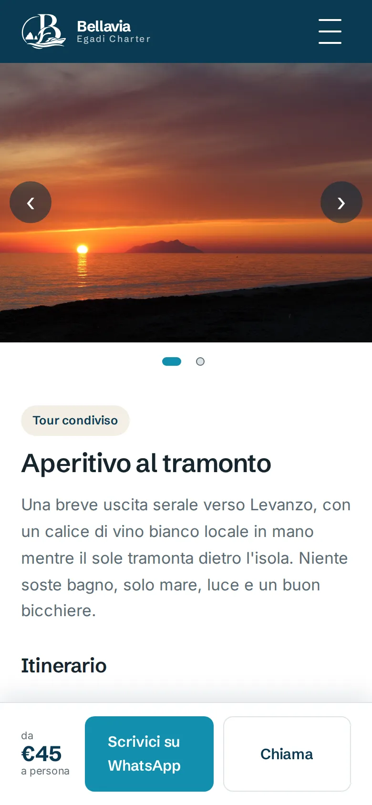
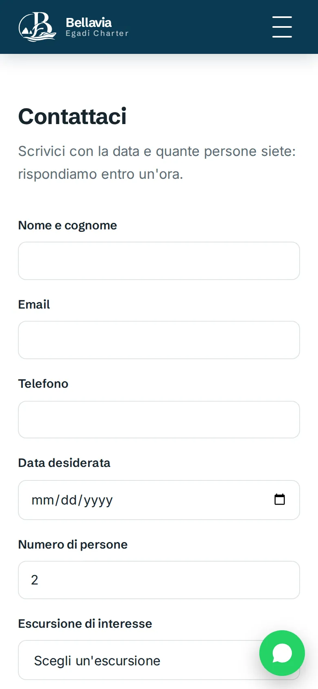
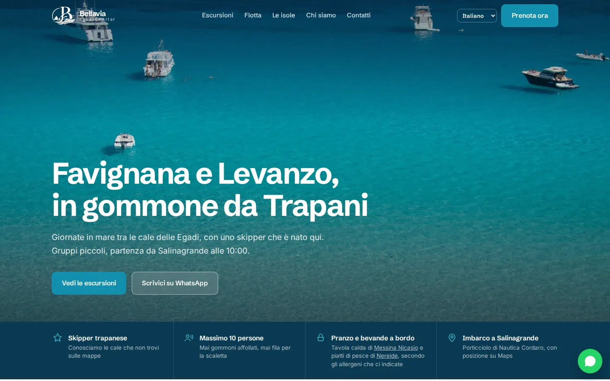
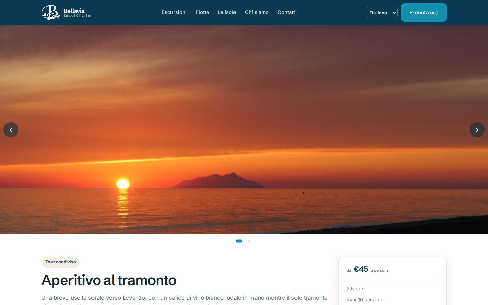
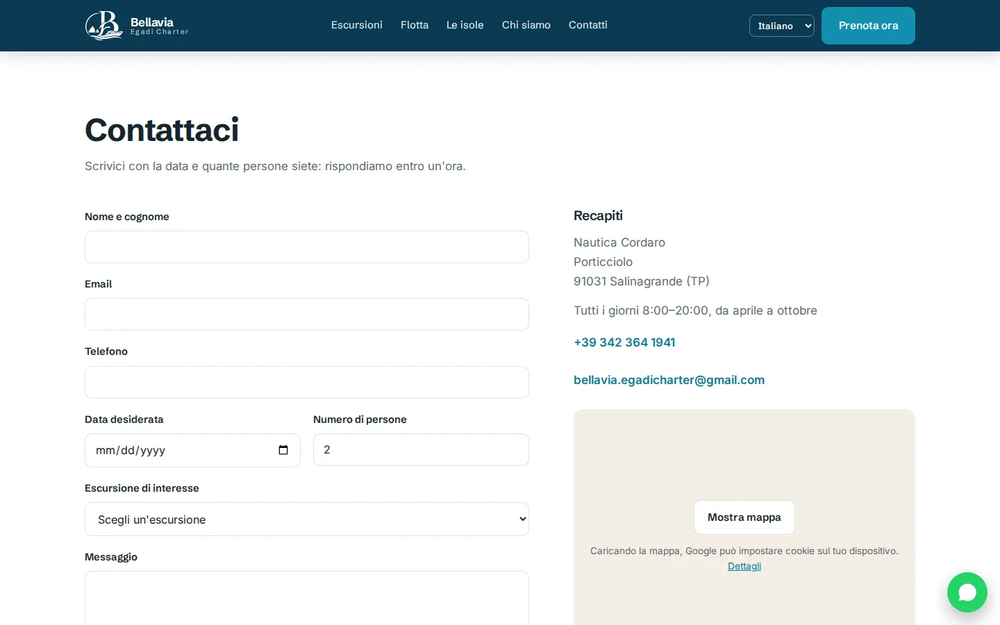

Case Study · Sito turistico · React + TypeScript
Sito vetrina per un'attività locale di charter che organizza escursioni in gommone da Trapani alle Isole Egadi — Favignana e Levanzo. Veloce, multilingue e pensato per trasformare un visitatore in un messaggio WhatsApp in un paio di tap.


Anteprima mobile



Anteprima desktop
Un piccolo charter di Trapani aveva bisogno di un sito che i turisti trovassero e usassero davvero: escursioni e prezzi chiari, foto vere e un contatto diretto con lo skipper via WhatsApp o telefono.
La maggior parte dei visitatori è straniera e naviga da smartphone, quindi il sito doveva essere veloce, multilingue e indicizzabile — e il titolare doveva poter cambiare prezzi, foto e testi senza toccare un componente.
Obiettivo
Più prenotazioni dirette via WhatsApp e telefono.
Pubblico
Turisti a Trapani, soprattutto da mobile, in 7 lingue.
Vincoli
Niente backend, niente CMS, hosting economico.
Un'app React + TypeScript costruita con Vite. In fase di build ogni pagina viene renderizzata lato server in ogni lingua e salvata come HTML statico, poi idratata nel browser — la SEO di un sito statico con la comodità di React. Il risultato è servito da Nginx in un container Docker non-root, con Caddy davanti per l'HTTPS automatico.
Pipeline di build — dai contenuti alla pagina nel browser
Niente backend e niente database: l'unica chiamata a runtime è all'API marina gratuita di Open-Meteo per le previsioni del mare.
Perché: componenti riutilizzabili (card delle escursioni, slideshow, FAQ) e tipi che tengono coerenti dati e traduzioni.
Come: un tipo Dict ricavato dal dizionario italiano: ogni altra lingua deve rispettarlo, quindi una traduzione mancante blocca la build.
Risultato: gli errori nei contenuti si scoprono prima del deploy, non da un cliente.
Perché: una SPA solo lato client consegna un HTML vuoto, e questo penalizza la SEO di un'attività che vive di Google.
Come: un entry server renderizza ogni pagina con React Router, uno script Node scrive i file HTML, la sitemap e robots.txt.
Risultato: ogni pagina è indicizzabile in ogni lingua, senza nessun runtime lato server.
Perché: stili isolati, senza runtime e senza un framework da imparare per chi metterà mano al codice dopo.
Come: un .module.css per componente, colori, font e spaziature globali come variabili CSS, font in self-hosting.
Risultato: un bundle leggero e stili che non si mescolano mai tra componenti.
Perché: deploy su qualsiasi VPS con un solo comando, HTTPS incluso.
Come: build multi-stage (deps → build → nginx:alpine) eseguita come utente non-root con health check; Caddy ottiene e rinnova i certificati da solo.
Risultato: "git pull + docker compose up" è l'intero processo di rilascio.
SEO per un'app React
Soluzione: prerendering di ogni pagina in fase di build invece di aggiungere un server Node. Lezione: si possono avere React e un sito completamente statico e indicizzabile insieme.
Sette lingue sempre allineate
Soluzione: dizionari tipizzati su quello italiano, così TypeScript segnala ogni chiave mancante. Lezione: i tipi sono uno strumento ottimo anche per i contenuti, non solo per il codice.
Un sito che il titolare può gestire
Soluzione: dati, testi e componenti separati, e un README scritto per chi non è sviluppatore: dove cambiare un prezzo, una foto o un numero di telefono. Lezione: quando è il cliente a modificare il sito, la documentazione fa parte del prodotto.
Vuoi vedere il codice?